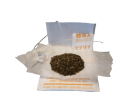
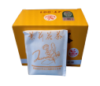
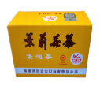
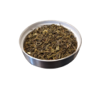
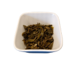
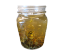

Loose leaf tea
Als jij het meest waard voor je geld wilt, kan je beter kiezen voor gedroogd losse theebladeren i.p.v theezakjes.
Gedroogd losse theebladeren wordt zo verwerkt dat je de volle smaak & gezondsheidseigenschappen behoudt, doordat ze meer ruimte hebben in heet water kunnen de bladeren zich beter uitzetten waardoor een complexere smaak vrijkomt.
In tegenstelling tot theezakjes, wat een mix is van de laagste kwaliteit gebroken theebladeren met een beperkte ruimte om zich uit te zetten. Zo bespaar je het milieu doordat er minder gebruik gemaakt hoeft te worden van verpakkingsmaterialen.
 
 
 
Thee is ook een vorm van kunst & cultuur voorbereiding. Dankzij vele brouwmethodes kan jij als theeliefhebber deelnemen aan de bereiding van thee als een mindfull ritueel.
Oud-traditionele ceremonies waar ik het meer over ga hebben met Moychay. Voorbeelden hiervan zijn de sterkte van je thee bepalen, meer of minder bladeren, de tijd hoe lang wil je dat de thee zich kan uitzetten in het water en wat voor temperatuur.
Voor in de zomer: Kōridash (Japan ijsbrouwthee) zoals de naam zegt wordt in de zomer kan je loose theebladeren met ijs laten brouwen wat een zoetere en zachtere smaak profiel geeft.